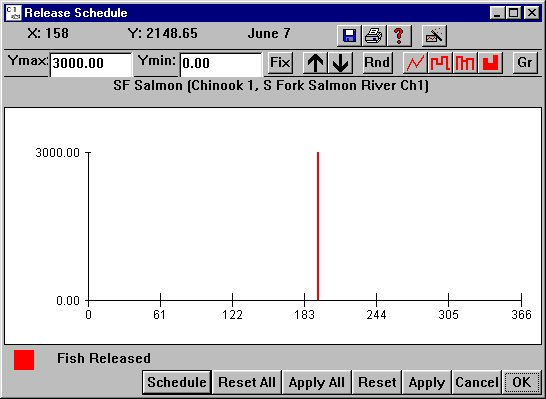

Open the Release Schedule window, companion to the Release Tool window, by opening the Release Tool window. See the Open Release Tool section for details. In the Release Schedule window, you can change the number of fish released and the release range (the number of days over which the release is spread) following the Release Start day set in the Release Tool window. The range of the release and the number of fish released is displayed using Julian Day in the Release Schedule window. Please note that you are not actually setting release numbers to occur on specific days. COMPASS will ignore attempts to set part or all of the release range before the Release Start day. After setting the range of the release, if you change the Release Start day in the Release Tool window, the whole release range will shift in respect to the change in that date (the length of the release range will remain the same). For example, if the range of the release is five days and the Release Start day is adjusted in the Release Tool window, the release will remain spread over five days. If you make changes in release counts or the number of days of release, you must click Apply for changes to take effect.
This is an Editable Graph window.

Release Schedule window, the Release Tool companion window